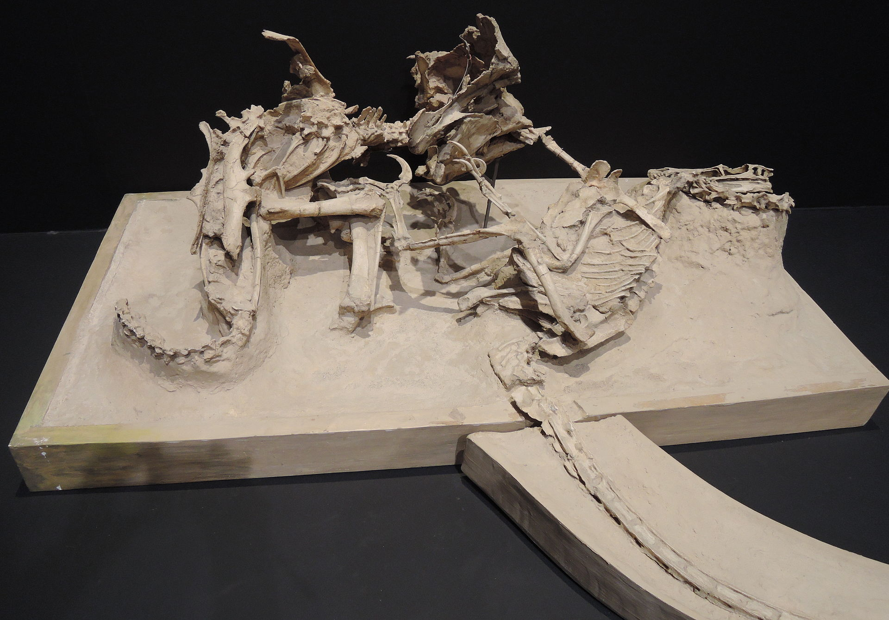
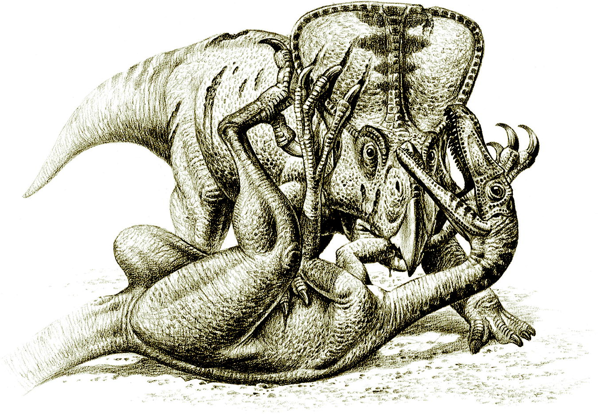

Bem-vindos a aba de descobertas do site! Aqui você encontrará notícias sobre as descobertas mais recentes acerca desses seres incríveis e paleontologia no geral, explore e se aprofunde mais nesse mundo cheio de criaturas fantásticas!
Uma recente descoberta no campo da paleontologia tem movimentado a comunidade científica brasileira. Pesquisadores da Universidade do Estado do Rio de Janeiro (UERJ) identificaram uma nova espécie de dinossauro herbívoro, que foi nomeado de Tietasaura derbyiana. Esta descoberta é particularmente significativa, pois se trata do primeiro dinossauro ornitísquio – conhecido por suas características similares às aves – encontrado no Brasil.
Catalogado em 2024, na Bacia do Recôncavo, no nordeste do Brasil, a descoberta ocorreu a partir da análise de fósseis coletados entre 1859 e 1906. A equipe de paleontólogos observou registros e imagens de materiais encontrados recentemente no Museu de História Natural de Londres e identificou características que comprovavam a existência da nova espécie. Essa região, já conhecida por sua rica biodiversidade, revelou-se também um importante sítio para o estudo dos dinossauros herbívoros do período Cretáceo.
Este achado não apenas coloca o Brasil no mapa como um campo significativo para a paleontologia mundial, mas também inspira futuras gerações de cientistas brasileiros na exploração de nossa história pré-histórica. A Tietasaura derbyiana abre novas portas para o entendimento da fauna que dominou a região do Recôncavo há milhões de anos, promovendo um renovado interesse pela paleontologia e pela ciência nacional.
Portanto, a descoberta da Tietasaura derbyiana é um lembrete do vasto potencial científico do Brasil e um convite aos pesquisadores para que continuem a explorar e a descobrir os segredos que nossas terras ainda guardam.
Um fóssil que retrata uma luta entre um Protoceratops contra um Velociraptor foi encontrado! Estima-se que o confronto aconteceu há 74 milhões de anos atrás, onde hoje é a mongólia e demonstra dois dinossauros lutando pela vida em um deserto. Acredita-se que durante o confronto, ambos os animais foram soterrados por uma duna de areia que colapsou sobre eles, criando um dos fósseis mais incríveis de todos os tempos.
Esse fóssil nos dá uma ideia sobre como o Velociraptor atacava e como o Protoceratops se defendia. O Protoceratops usava seu bico para se defender, mordendo um dos braços do Raptor, além de ser maior e mais pesado, o que dá uma vantagem na luta. Por outro lado, o Raptor tem uma de suas imensas garras curvada bem no pescoço de sua presa, o que é algo claramente fatal.
O fóssil foi encontrado na Formação Djadokhta do Cretáceo Superior da Mongólia em 1971.